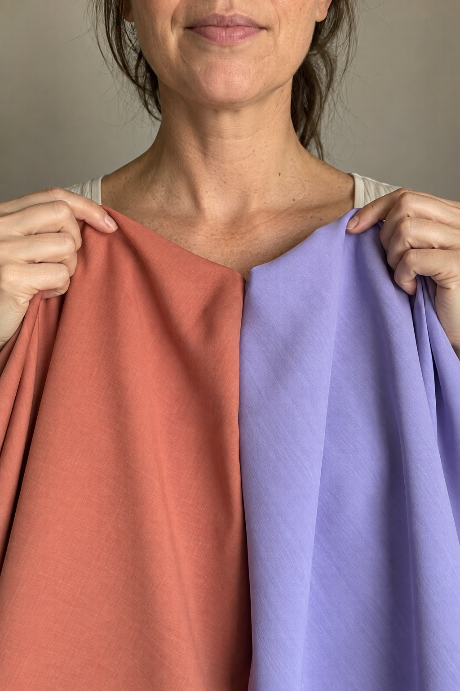
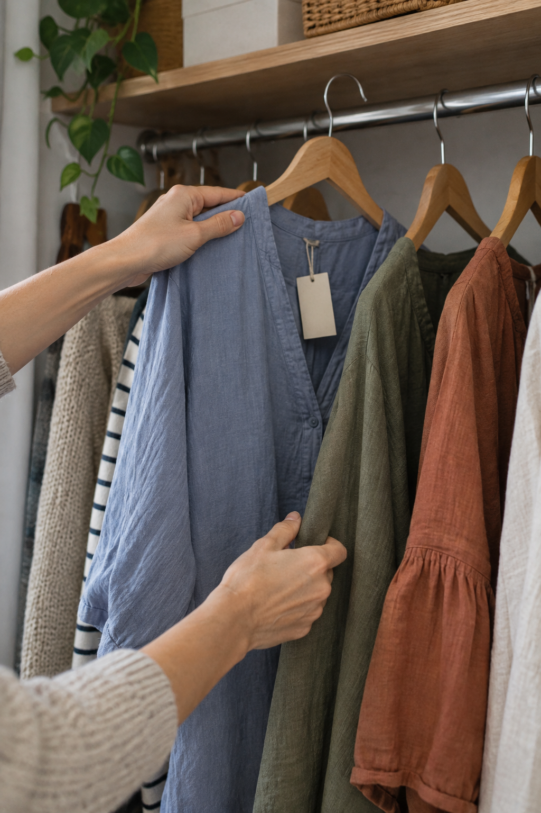

Buy or skip?Scan first✓Matched to you✓Avoid costly color mistakes9:41Result✓ BUY ITWarm oliveMatches your paletteScan Next →
Washed out?Find your colors✓Your season✓Colors that suit you9:41Your Colors✦WarmAutumnWarm undertoneYour colorsColors to avoid
Wrong color?Try these shades✓Colors to skip✓Shades to try instead9:41Result× SKIPCool blueTry insteadWarm oliveTerracotta